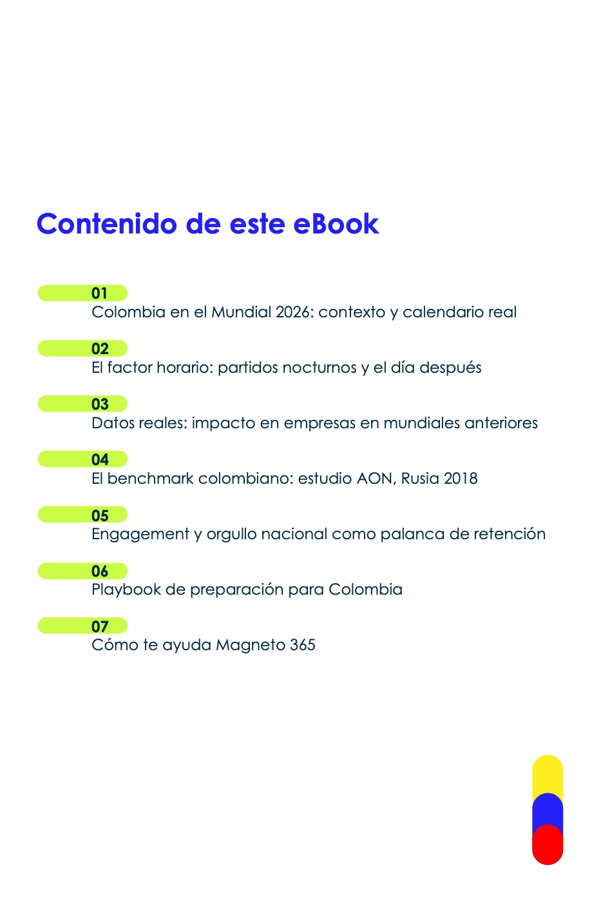
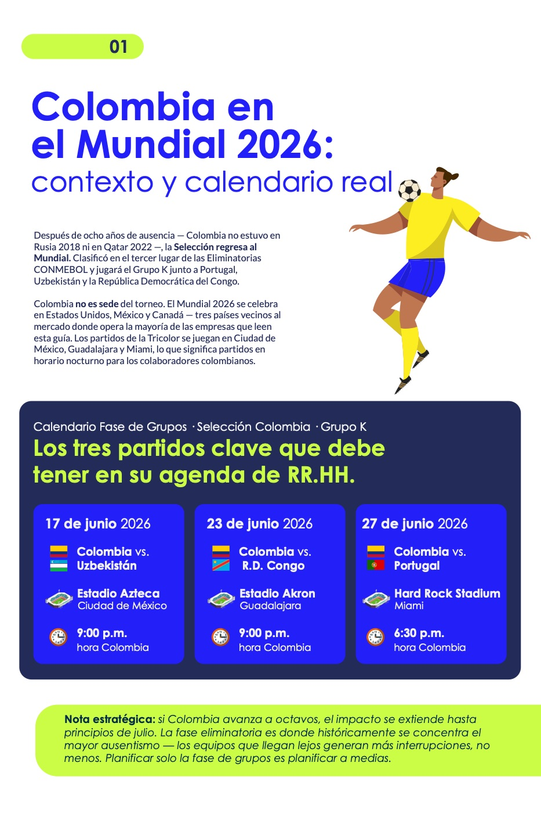
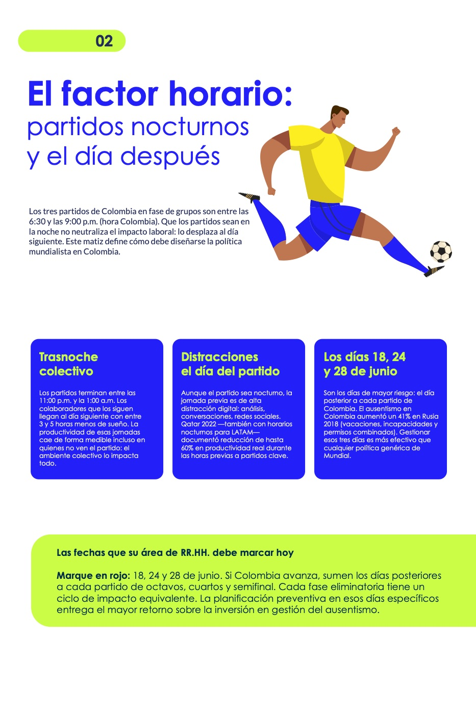
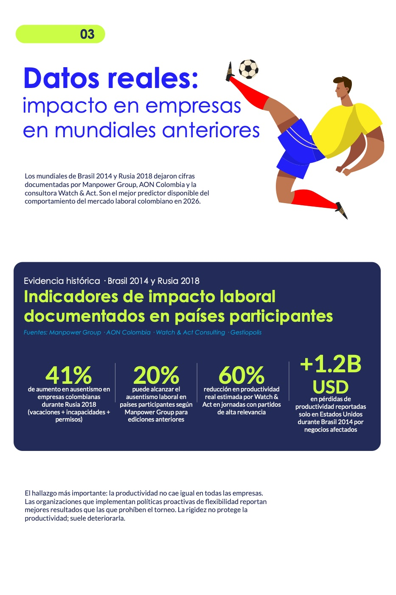
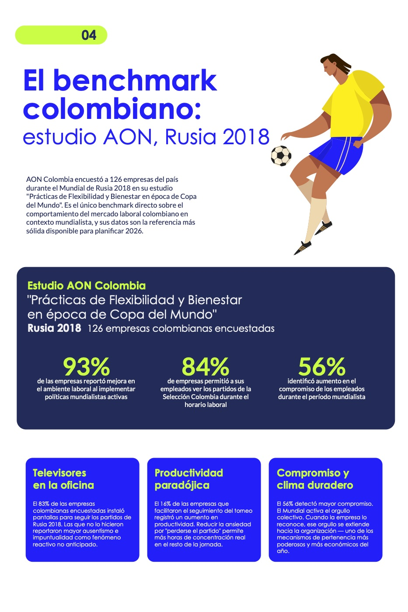
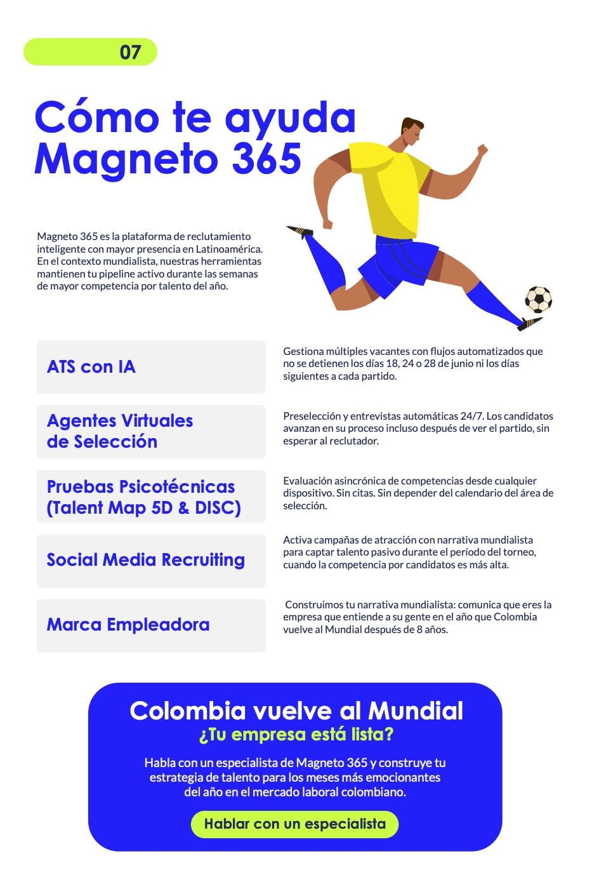

Un personaje en movimiento
El jugador ilustrado cambia de pose en cada capítulo y guía la lectura.
Un e-book que usa el regreso de la Selección Colombia al Mundial para hablar de productividad, ausentismo y retención. Diez páginas con datos, calendario y un plan de acción para líderes de recursos humanos.

El Mundial es la conversación de todo el país; el e-book la convierte en una pregunta de recursos humanos: ¿qué pasa con la productividad cuando juega Colombia? La ilustración del jugador y los colores patrios hacen que el contenido B2B se sienta oportuno y cercano.






El jugador ilustrado cambia de pose en cada capítulo y guía la lectura.
Cada capítulo tiene un dato protagonista en tarjetas azules.
Una franja lima cierra cada sección con la recomendación accionable.